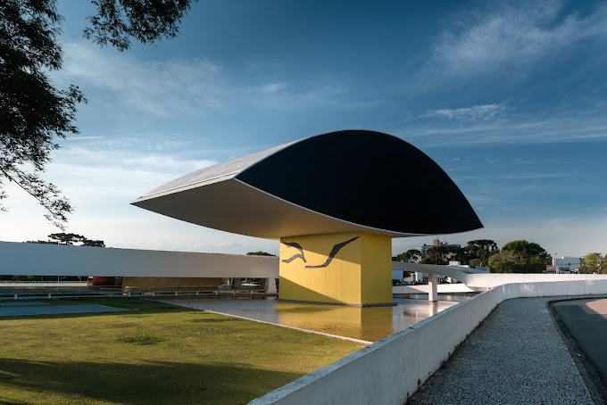
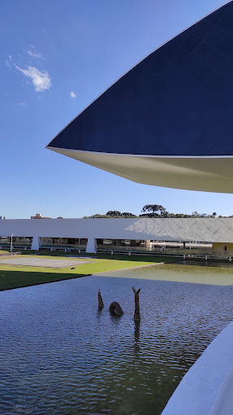
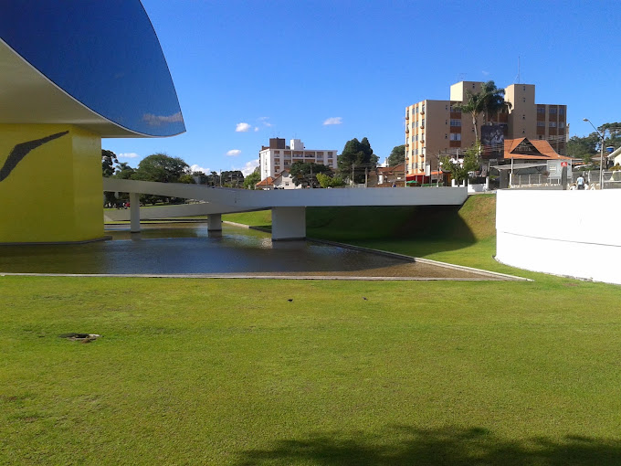

Importancia historica
O contexto histórico do Museu Oscar Niemeyer (MON) está profundamente ligado às transformações urbanísticas de Curitiba e às reviravoltas políticas do Brasil na segunda metade do século XX.

Contexto historico
A cultura do Paraná começou a se desenvolver desde o período colonial, entre os séculos XVI e XVII, quando os primeiros povos indígenas habitavam a região. Grupos como os Guarani, Kaingang e Xetá já possuíam costumes, crenças, línguas e formas de organização social que constituem a base da história cultural do estado.

Importancia Cultural
O Museu Oscar Niemeyer (MON) possui uma importância cultural que vai muito além de sua arquitetura monumental. Ele atua como um polo de irradiação artística para toda a América Latina, quebrando o monopólio cultural do eixo Rio-São Paulo e integrando a capital paranaense no circuito das grandes exibições mundiais.

Curiosidades
Curiosidades 1
🐟 O "Olho" não nasceu com o museuO complexo principal (o prédio retangular) foi projetado por Oscar Niemeyer em 1967 para ser o Instituto de Educação do Paraná, mas acabou funcionando por décadas como sede de secretarias de Estado. Foi apenas em 2001 que o governo decidiu transformá-lo em museu. Niemeyer, então com 94 anos, reformou o projeto e adicionou o famoso anexo em formato de olho, inaugurado em 2002.
Curiosidades 2
📏 Engenharia surpreendenteA icônica torre do Olho possui 30 metros de altura e é feita de concreto armado e vidro espelhado. Toda essa estrutura imensa se apoia em uma única base central (um pilar de apoio) de apenas 7 metros de largura, criando a ilusão de que a estrutura está flutuando sobre o espelho d'água.
Interaja com o site
Clique no botão acima